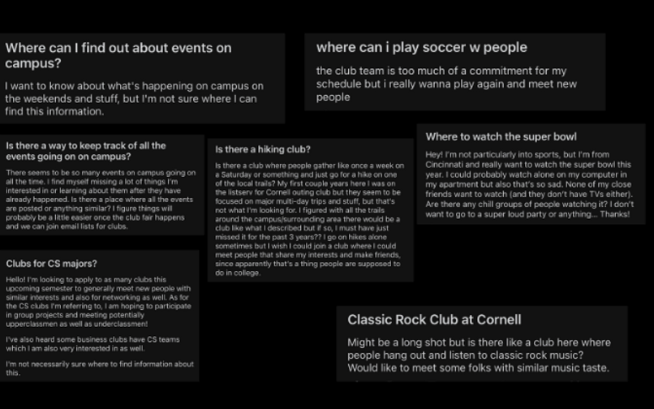

Improve event searching personalized to interests and location
conveniently and easily while establishing new connections.
Evently App
OVERVIEW:
This app provides college students with a solution to discover a wide range of events happening on/off
campus, identify the ones that fit their preferences and convenience (time, location), and expand their
social network.
Duration:
Jan 2022 - May 2022
Client:
Cornell University Undergraduates and Graduates Students
Team:
Ben Catania
Evan Wagle
Huong Pham
My Role:
User Research
Prototyping
Usability Testing
Interface Design
Project Overview
College students are constantly seeking out opportunities to participate in community events, to make
new
connections, and to shape their identity. Despite efforts to solve this problem (CampusGroups,
flyers,
etc), we continually see the same questions resurfacing:

With this research, our major objective is to completely revamp and reimagine a solution that would
help
students stay up to date and learn about events on/off campus that fit their work schedules, but
also
consider the less obvious factors of logistical concerns and friends.
Through a qualitative study, we conducted a co-design session involving hands-on activities,
auto-ethnography, and diary studies. Our team designed an application that accommodates the
needs/challenges of users when it comes to finding events, taking into account insights from these
research methods.
I was responsible for preparing for the co-design session, analyzing data from user research
methods,
and UX/UI design for the application which increase internal workflow efficiency and facilitate more
effective event searching among students based on personal interests.
Challenges & Goals
One of the largest challenges in connecting people to events is the idea that people seek convenience, may not plan events in advance, and may not always seek to go out of their way to meet new people. Given this information, it is often the case that individuals will choose to attend events that are close and convenient for them. Homophily plays a major role in who we associate with, and therefore impacts the social relationships we foster. With the help of wireless technology for location tracking, researchers reported in 2013 that colocation of users, similarities in their movement patterns, and common interests can be used for friendship matching in a variety of settings, such as the workplace, conference, and other places of interaction.
Key challenges and goals discovered through the analysis of literature and related research and development. Our team has uncovered unique perspectives on possible ways of addressing this "wicked problem".
Target Users
Our primary user group was college students who were looking to socialize and were recruited from student gatherings such as student-run organizations, off-campus gatherings, bars, and any other on-campus/off-campus event.
User Persona
A persona helped us visualize the user and their interactions with our design, while requirements connected what we understood about how users operate and how we should design the system
Contextual Interview Findings
We conducted interviews with six users. Then, we clustered our activity notes using an affinity diagram, dividing it into groups and levels to represent its significance in our problem space. We crafted a persona and requirement statements for whom we are designing.
Insight #1: Location is a factor when it comes to getting appropriate transportation to events.
Insight #2: Many students rely on listserve and instagram stories to learn about events but
don’t find it as effective.
Insight #3: Students find it challenging to find events based on personalized interests.
Insight #4: Most students enjoy finding new connections and strive to find balance in life and work.
Method I: Co-Design Session
Co-design is the best method for the project because attending and organizing social events can drastically vary. Often, socializing can be spontaneous, with plans decided at the spur of the moment. It started with an icebreaker to improve communication and team cohesion. Next, participants were split into teams of two to analyze the problem space and brainstorm. Participants then sketched design concepts and built a prototype to present to the other team for feedback. Then, participants mapped how users would utilize the product with storyboarding and scenario role-play based on the storyboard. Throughout the session, 2 researchers assisted each team. In this setup, one researcher focused on note-taking using a laptop while the other focused on helping the team
Notes from past interviews were used for affinity diagramming. Creating this diagram allowed us and our participants to identify themes and trends in the data, which aided in sketching and prototyping. Further, we sorted through the data and fieldnotes taken during the co-design session to identify common trends and themes to provide grounds for product improvement.
Intimacy and commonality between people are important parts of social event planning. One of our participants discussed the Cornell summer social scene, in which parties were generally larger despite the smaller Cornell student population present on campus, due to the fact that summer students felt they had more in common and had a closer-knit community than during the academic year.
Our participants desire to “expand their network in a natural way,” meaning that they hope to be able to find events that relate to their interests, as they can find other people with similar interests at these events. People felt intimidated to attend events unless they knew people at the events, or knew that the audience was amicable and shared similar interests to them.
Each of our participants discussed the importance of convenience in finding social events, which was demonstrated in particular as one of our participants developed a prototype monorail to travel around campus near instantaneously. From this we recognized the importance of enabling students, who generally lack fast transportation, to find events close and convenient to them.
UI Sketches & Paper Prototyping
Analyzing the design ideas from the co design session, the team discussed major challenges and priorities users look for in an effective solution that meets their needs. Our sketches focused on four main factors participants found significant:
Location proximity, event feeds with organizations & informal events, a personalization-based filter for events, and the matching of friends with new people.
Method II: Auto-ethnography combined with diary studies
In the context of our design, participants will be the four members ourselves, each conducting an auto-ethnographic study on an existing product in the community platform space: Campus Groups, Facebook & Instagram, Cornell Events, and Listserv Gmail. These platforms were chosen based on interview findings and their popularity among students. Researchers will use these platforms to better understand the user’s perspective and their experiences, helping create a better picture of the positive and negative aspects of existing designs.
In the context of our study, researchers would fill out a hybrid feedback and elicitation diary to learn about their thoughts/experiences for each community platform. This combination of research methods helps reach the project's goals by allowing us to empathize with users’ socializing process and identify the pros and cons of existing products.
It was shown that word of mouth and text was the most frequent method used for finding social events, with usage at 38.5% of the time.
We asked our participants to determine the utility of the technology used in searching for events from 1 to 5, with 5 being the most useful and 1 being the least useful. In analyzing this data, we calculated the average score of each tool and found that email listservs, word of mouth, and text were the most effective. However, this may be because these tools require a user to “opt-in” (subscribe or join a friend network), whereas CampusGroups and Cornell events are not personalized to the individual and offer a generalized experience, while social media tools offer a mix of opt-in (following users) and exploratory (recommended) content
Design Concept
A mobile application that conveniently and effectively enables students to establish new connections and search events that are personalized to their interests while considering factors like transportation and location proximity.
Profile Set Up (Landing Page)
A three-step process that allows users to set up their profile and adding their interests/major(s) to allow for event feeds to be personalized for each person.
Personalized Events Feed (Home Page)
Using an inspired tinder swipe feature, swipe through events and/or gatherings that seem interesting to you and favorite it to attend later. Also have the option of clicking each event to find out about more specific information (time, date, distance, etc).
Location Proximity
A map of the user’s current location which shows nearby events going on in the style of a heat map, where more events or more people in a certain area are highlighted as darker spots on the map. Users can move the camera view to see nearby events as well as update the map to filter by distance. This helps solve the user’s issue of convenience and the ability to spontaneously find nearby events.
Friends Matching Page
he chat page shows a banner with the user’s latest matches and a list of chat messages. Users have the ability to quickly message matches and start a group chat with people with similar interests
Event Managing Page
This shows the events that the user saves and the events the user is hosting. This meets the user need of being able to manage events and stay organized, as stated as important in both the co-design and auto-ethnography sessions.
Information Architecture
To make sure the design is not only oriented to users' needs, but also to business vision and technological feasibility, the team went through various usability tests to obtain feedback on the information architecture with the users.